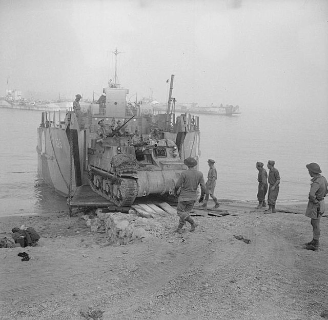

Benito Mussolini began by writing for socialist newspapers. He was an avid socialist, and was against wars. When WWI broke out, he protested just like all the other socialists. However, he realized how Italy, and socialism, could benefit from the war, and he became pro-war. His fellow socialists did not like his way of thinking, though, and he was soon kicked out of the party. But Mussolini wasn't going to give up on his ideas yet. Instead, he created a new ideology, fascism. Mussolini had great speaking skills, and he was able to gather a large following. In October 1922, he marched into Rome, and forced the king to make him prime minister of Italy.
Courtesy of F l a n k e r, Wikimedia Commons, CC-BY-SA
Benito Mussolini saw what Hitler had accomplished, and he did not want to be outdone. So, he decided to invade Abyssinia, or modern-day Ethiopia. The main reason for this was that Abyssinia did not have the war technology possessed by Italy. Italy successfully invaded and captured the country of Abyssina. Next, Italy decided to capture Egypt, which then was controlled by the UK. However, the British were a strong fighting force, and the Italian army could not compete. The North African campaign was a failure. Finally, Italy changed its focus to Greece. Italian forces prepared to invade Greece, but when they finally attacked Greece, it went the other way, with Italy alosing some of its occupied territory to Greek forces. The invasion of Greece was a complete disaster for Mussolini's reputation.

After the allies took Italy and Germany out of Africa, they prepared for an invasion of Italy. The Italian forces trained for an invasion, but were no match for the might of the allies. The allies easily started to breeze through Italy, and Hitler did not want them to reach Germany. However, the Italian forces were too weak to fight back. In an operation called Operation Axis, German troops moved into Italy and took guns from Italian soldiers. The allies took the majority of southern Italy, but were halted by the German forces.
Courtesy of No 2 Army Film and Photographic Unit, Whicker (Lt), Wikimedia Commons,CC0